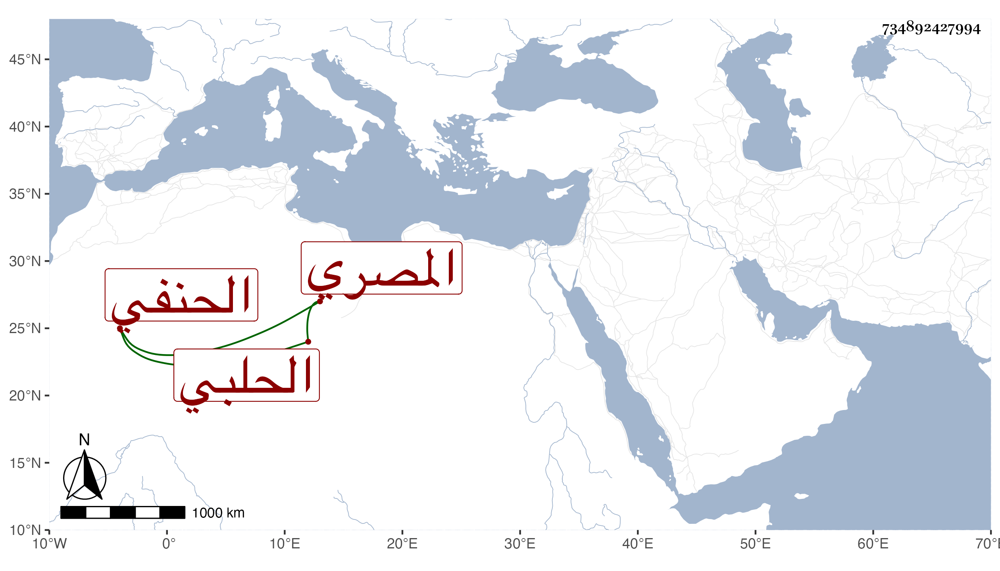

0902Sakhawi.DawLamic.ITO20230111-ara1.EIS1600.734892427994
Biography ID: 734892427994
929
عبد اللطيف بن محمد بن عبد الكريم بن عبد النور بن منير الزين بن التقي بن الحافظ القطب الحلبي ثم المصري الحنفي أخو عبد الكريم الماضي وهذا أصغر ويعرف بالحلبي ، ولد فيما كتبه بخطه سنة أربعين وسبعمائة وأحضر على أبي الفرج عبد الرحمن بن عبد الهادي وأسمع علي الميدومي المسلسل ومشيخة النجيب الكبرى وحدث قرأهما عليه شيخنا ، قال وكان وقورا خيرا حسن السمت ، مات في وسط صفر سنة أربع وبخط الكلوتاتي إنه في ربيع الآخر وعلى الأول اقتصر المقريزي في عقوده تبعا لشيخنا .
